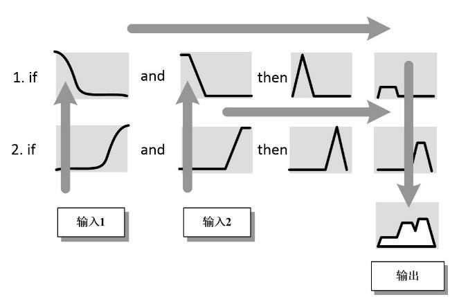
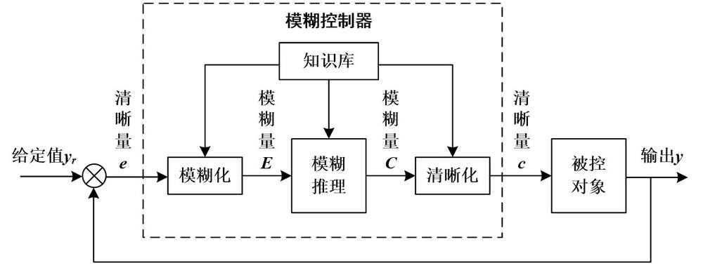
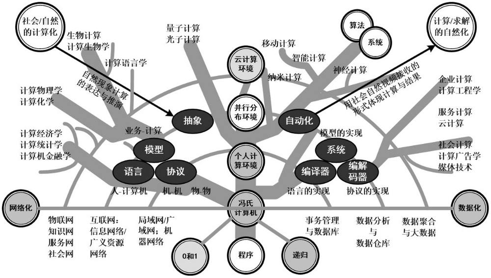

第 1 页 · 数智人才培养

数智人才培养
AI通识精品系列
周苏 教授 QQ：81505050
人工智能通识教程

第 2 页 · 第2章
第2章
周苏 教授 QQ：81505050
数学素养与计算思维


第 3 页 · 数学素养与计算思维是现代教育中两个非常重要的组成部分，尤其在人工智能、数据科学等技术领域。这两者不仅帮助人们掌握必要的技
数学素养与计算思维是现代教育中两个非常重要的组成部分，尤其在人工智能、数据科学等技术领域。这两者不仅帮助人们掌握必要的技能和知识，还培养了他们解决问题的能力和逻辑思考的方式。
第2章 数学素养与计算思维
第 4 页 · 01

01
人工智能
的学科基础
02
数学之美
与数学素养
03
关于
模糊逻辑
04
计算思维
目录 / CONTENTS
第 5 页 · PART 01
PART 01
人工智能的学科基础
第 6 页 · 人工智能（AI）作为一个跨学科的领域，为其提供思想、观点和技术的，主要涉及哲学、数学、经济学、神经科学、心理学、计算机工
人工智能（AI）作为一个跨学科的领域，为其提供思想、观点和技术的，主要涉及哲学、数学、经济学、神经科学、心理学、计算机工程、控制论以及语言学等多个学科的基础理论和技术。以下是一些关键的学科基础，它们共同支撑了现代人工智能的研究与应用。
2.1 人工智能的学科基础
第 7 页 · （1）计算机科学。
（1）计算机科学。
• 编程与软件工程：编写高效的算法和程序是实现人工智能功能的基础。掌握至少一种编程语言（如Python、Java或C++），并了解软件开发的基本原则对于从事人工智能开发工作至关重要。
• 数据结构与算法：理解如何高效地存储和处理数据，以及设计解决特定问题的算法，是人工智能系统性能优化的关键。
• 操作系统与分布式计算：随着人工智能模型规模的增长，如何利用多核处理器、GPU集群等硬件资源变得尤为重要。
2.1 人工智能的学科基础
第 8 页 · （2）数学。
（2）数学。
• 线性代数：矩阵运算、向量空间等概念在机器学习和深度学习中广泛应用，尤其是在神经网络的权重更新过程中。
• 概率论与统计学：用于数据分析、模式识别和预测建模。贝叶斯定理、随机变量、分布函数等都是理解和构建人工智能模型的重要工具。
• 微积分：特别是梯度下降法等优化技术，依赖于微分学来最小化损失函数。
2.1 人工智能的学科基础
第 9 页 · （3）逻辑与认知科学。
（3）逻辑与认知科学。
• 形式逻辑：为知识表示和推理提供框架，帮助人工智能系统进行决策制定和问题解决。
• 认知心理学：研究人类思维过程如何影响信息处理方式，有助于设计更人性化的交互界面和用户体验。
2.1 人工智能的学科基础
第 10 页 · （4）工程学。
（4）工程学。
• 机器人学：涉及机械设计、传感器技术和控制系统，制造能够执行复杂任务的物理设备。
• 信号处理：音频、图像和其他类型信号的分析与合成，在语音识别、计算机视觉等领域有着重要作用。
（5）语言学。其中的自然语言处理（NLP），结合语言学理论与计算机科学技术，使计算机能够理解、生成人类语言，支持聊天机器人、自动翻译等应用。
2.1 人工智能的学科基础
第 11 页 · （6）伦理学与法律。
（6）伦理学与法律。
• 人工智能伦理：探讨人工智能系统的道德责任，确保技术进步不会损害社会利益或侵犯个人隐私。
• 法律法规：了解相关法规对人工智能产品和服务的影响，保障合规运营。
2.1 人工智能的学科基础
第 12 页 · （7）经济学与管理学。
（7）经济学与管理学。
• 决策理论：通过数据分析做出最优选择，广泛应用于推荐系统、市场预测等领域。
• 项目管理：有效组织和管理人工智能项目的生命周期，确保按时交付高质量成果。
（8）物理学。其中的量子计算，探索使用量子比特代替传统二进制位的可能性，以期突破现有计算能力限制，加速某些类型的人工智能计算。
2.1 人工智能的学科基础
第 13 页 · 在实际的人工智能项目中，这些学科并不是孤立存在的，而是相互交织、互相支持。例如：
在实际的人工智能项目中，这些学科并不是孤立存在的，而是相互交织、互相支持。例如：
（1）自动驾驶汽车需要结合计算机视觉（来自工程学）、传感器融合（物理学）、路径规划（数学与逻辑）、用户界面设计（认知科学）等多个领域的知识。
（2）智能客服系统则可能涉及到自然语言处理（语言学）、情感分析（心理学）、对话管理（逻辑学）等方面的技术。
2.1 人工智能的学科基础
第 14 页 · 因此，一个成功的人工智能专家不仅需要扎实的专业技能，还需要具备跨学科的知识背景和灵活运用这些知识的能力。这使得他们能够在
因此，一个成功的人工智能专家不仅需要扎实的专业技能，还需要具备跨学科的知识背景和灵活运用这些知识的能力。这使得他们能够在快速变化的技术环境中持续创新，并推动人工智能技术不断向前发展。
2.1 人工智能的学科基础
第 15 页 · PART 02
PART 02
数学之美与数学素养
第 16 页 · 数学之美体现在简洁、对称与和谐形式中，通过优雅的公式和深刻的定理揭示自然界的内在规律与结构。它不仅有严格的逻辑框架，还蕴
数学之美体现在简洁、对称与和谐形式中，通过优雅的公式和深刻的定理揭示自然界的内在规律与结构。它不仅有严格的逻辑框架，还蕴含着令人惊叹的创造力和普遍性，激发人们对抽象思维的欣赏与探
索。而数学素养则是指个体理解和运用数学概念的能
力，包括逻辑推理、问题解决及数据分析等技能，是
培养批判性思维和创新能力的基础。拥有良好的数学
素养不仅能让人领略数学之美，还能在日常生活和专
业领域中更有效地解决问题，促进个人和社会发展。
2.2 数学之美与数学素养
第 17 页 · 数学之所以被认为是美的，是因为它不仅揭示了自然界和宇宙的深层次结构与规律，还通过简洁、对称、和谐的形式展现了抽象思维的魅
数学之所以被认为是美的，是因为它不仅揭示了自然界和宇宙的深层次结构与规律，还通过简洁、对称、和谐的形式展现了抽象思维的魅力。
（1）简洁性。数学之美首先体现在其简洁上。复杂的自然现象往往可以用非常简单的数学公式或原理来描述。例如，爱因斯坦的质能方程 E=mc2，仅用三个字母就表达了能量与质量之间的关系，展示了深刻的物理真理。
2.2.1 数学是美的
第 18 页 · （2）对称性。这是自然界中普遍存在的现象，也是数学美的一个重要特征。无论是几何图形中的轴对称、中心对称，还是代数方程中的
（2）对称性。这是自然界中普遍存在的现象，也是数学美的一个重要特征。无论是几何图形中的轴对称、中心对称，还是代数方程中的对称性，都给人以视觉上的美感和逻辑上的满足感。比如，正多边形和晶体结构体现了高度的对称美。
（3）和谐性。数学中的和谐体现在不同概念之间的内在联系以及它们如何共同作用形成一个完整的体系。例如，欧拉公式 e^{i\pi} + 1 = 0 将五个最重要的数学常数（e, i, \pi, 1, 0）以极其优雅的方式连接起来，体现了数学内部的统一性和和谐美。
2.2.1 数学是美的
第 19 页 · （4）惊奇性。数学常常带来意想不到的结果，这种出乎意料的发现同样构成了它的美学价值。比如费马大定理经过三百多年的努力才被
（4）惊奇性。数学常常带来意想不到的结果，这种出乎意料的发现同样构成了它的美学价值。比如费马大定理经过三百多年的努力才被证明，其过程充满曲折与惊喜，成功令人赞叹。
（5）普遍性。数学定律具有普遍适用性，无论是在地球上还是在遥远的星系，数学的基本原则都是相同的。这种跨越时空的一致性赋予了数学一种超越文化的永恒之美。
2.2.1 数学是美的
第 20 页 · （6）创造性。虽然数学基于严格的逻辑推理，但它也是一门极具创造性的学科。数学家们不断探索新的理论、提出新的猜想，并通过创
（6）创造性。虽然数学基于严格的逻辑推理，但它也是一门极具创造性的学科。数学家们不断探索新的理论、提出新的猜想，并通过创新的方法解决问题。这种创造力使得数学不仅是科学的基础，也是一种艺术形式。
2.2.1 数学是美的
第 21 页 · 总的来说，数学的美在于它能够以最纯粹的形式表达复杂的思想，揭示世界的本质规律。它既有严谨的逻辑框架，又不失为一门充满想象
总的来说，数学的美在于它能够以最纯粹的形式表达复杂的思想，揭示世界的本质规律。它既有严谨的逻辑框架，又不失为一门充满想象力和创造力的艺术。对于那些深入研究数学的人来说，每一次发现新的定理或者解决难题的过程本身就是一种美的体验。因此，数学不仅是一种工具或语言，更是一种探索宇宙奥秘、追求真理的艺术。
2.2.1 数学是美的
第 22 页 · 数学素养是指一个人能够理解并应用数学概念、技能和思维方式来解决实际问题的能力。它不仅仅局限于记住公式或执行计算，更重要的
数学素养是指一个人能够理解并应用数学概念、技能和思维方式来解决实际问题的能力。它不仅仅局限于记住公式或执行计算，更重要的是理解数学背后的原理、数学的本质及其在日常生活中的广泛应用，并能够灵活运用这些知识。
2.2.2 数学素养内涵
第 23 页 · （1）基础知识。包括算术、代数、几何、概率论与统计学等基本数学领域的知识。
（1）基础知识。包括算术、代数、几何、概率论与统计学等基本数学领域的知识。
• 算术：包括加减乘除等基本运算，是所有高级数学的基础。
• 代数：涉及变量、方程和函数的概念，帮助我们理解和解决未知数的问题。
• 几何与测量：研究形状、大小、相对位置及空间属性，如面积、体积、角度等。
2.2.2 数学素养内涵
第 24 页 · • 概率论与统计学：处理不确定性，学习收集、分析和解释数据，评估风险和做出决策。
• 概率论与统计学：处理不确定性，学习收集、分析和解释数据，评估风险和做出决策。
• 微积分：探讨变化率（导数）和累积量（积分），广泛应用于科学、工程和经济学等领域。
2.2.2 数学素养内涵
第 25 页 · （2）抽象思维。能够将现实世界的问题转化为数学模型，并通过数学方法进行分析。
（2）抽象思维。能够将现实世界的问题转化为数学模型，并通过数学方法进行分析。
• 模式识别：识别数字、图形或其他对象之间的规律和关系。
• 逻辑推理：基于已知条件推导结论的能力，构建严密的论证过程，这是证明定理和解决复杂问题的核心。
• 符号表示：使用符号系统（如数学符号）简化复杂的表达式和概念。
2.2.2 数学素养内涵
第 26 页 · （3）问题解决能力。
（3）问题解决能力。
• 分解复杂问题：将大问题拆解为更小、更容易管理的部分。
• 制定策略：选择适当的工具和技术来解决问题。
• 检验答案：验证解决方案的有效性和合理性。
2.2.2 数学素养内涵
第 27 页 · （4）数据分析能力。指理解收集、处理和解释数据，这对于现代的数据驱动决策至关重要。
（4）数据分析能力。指理解收集、处理和解释数据，这对于现代的数据驱动决策至关重要。
• 数据收集：了解如何有效地获取相关信息。
• 数据分析：运用统计方法分析数据，提取有价值的信息。
• 结果解读：根据分析结果做出合理的判断和决策。
2.2.2 数学素养内涵
第 28 页 · （5）空间想象力。特别是在几何学和图形理论中，它有助于理解和解决三维或多维问题。
（5）空间想象力。特别是在几何学和图形理论中，它有助于理解和解决三维或多维问题。
• 三维想象：能够在脑海中操作和转换三维物体的形象。
• 几何直观：通过视觉化的方式理解和解决几何问题。
（6）批判性思维。
• 质疑假设：检查和挑战既定的前提条件。
• 评估证据：对信息来源和质量进行评估，确保结论的可靠性。
2.2.2 数学素养内涵
第 29 页 · 数学素养的重要性在于它不仅帮助我们理解和解决实际问题，还培养了逻辑思维、分析能力和创新精神，这些都是在快速变化的世界中取
数学素养的重要性在于它不仅帮助我们理解和解决实际问题，还培养了逻辑思维、分析能力和创新精神，这些都是在快速变化的世界中取得成功的关键。
（1）职业发展：许多行业，如金融、科技、医疗、教育等，都需要高水平的数学能力。具备良好数学素养的人更容易找到高薪工作，并且在职业生涯中有更多的晋升机会。
（2）日常生活：从购物时计算折扣到规划家庭预算，再到理解新闻报道中的统计数据，数学素养有助于提高生活质量。
2.2.3 数学素养的重要性
第 30 页 · （3）科学研究：几乎所有科学领域都依赖于数学模型来进行预测、模拟和分析。无论是物理、化学还是生物学，数学都是不可或缺的工
（3）科学研究：几乎所有科学领域都依赖于数学模型来进行预测、模拟和分析。无论是物理、化学还是生物学，数学都是不可或缺的工具。
（4）技术创新：现代技术的进步，特别是人工智能、大数据和量子计算等领域的发展，都需要深厚的数学背景作为支撑。
2.2.3 数学素养的重要性
第 31 页 · 培养和发展数学素养需要通过持续学习基础数学知识、积极参与实践应用、不断解决实际问题以及锻炼逻辑思维和抽象能力来实现。
培养和发展数学素养需要通过持续学习基础数学知识、积极参与实践应用、不断解决实际问题以及锻炼逻辑思维和抽象能力来实现。
（1）早期教育。应从小培养孩子对数学的兴趣，通过游戏、拼图等活动激发他们的好奇心和探索精神。强调数学的实际应用，让孩子明白数学不仅仅是课本上的习题，而是解决真实世界问题的关键。
（2）持续学习。鼓励终身学习，参加在线课程、研讨会或读书俱乐部，不断更新自己的知识体系。利用开放教育资源平台提供的免费或低成本课程。
2.2.4 培养和发展数学素养
第 32 页 · （3）实践练习。定期做数学练习题，保持大脑活跃，增强解决问题的能力。有条件的参与数学竞赛或项目，通过团队合作解决复杂问题
（3）实践练习。定期做数学练习题，保持大脑活跃，增强解决问题的能力。有条件的参与数学竞赛或项目，通过团队合作解决复杂问题，提升实战经验。
（4）跨学科整合。将数学与其他学科结合起来，例如物理学中的力学原理、经济学中的供需模型等，深化对数学概念的理解。探索编程语言（如Python、R）中的数学库，体验如何用代码实现数学算法。
（5）反思与讨论。经常回顾自己解决问题的过程，思考哪些方法有效，哪些需要改进。与他人交流想法，听取不同的观点，拓宽思路。
2.2.4 培养和发展数学素养
第 33 页 · 通过上述途径，可以有效地提升个人的数学素养，不仅有助于学术成就和个人成长，也为未来的职业生涯和社会贡献奠定了坚实的基础。
通过上述途径，可以有效地提升个人的数学素养，不仅有助于学术成就和个人成长，也为未来的职业生涯和社会贡献奠定了坚实的基础。
2.2.4 培养和发展数学素养
第 34 页 · 数学素养对人工智能的意义，在于它提供了理解算法原理、优化模型性能及解决复杂问题所需的理论基础和逻辑思维能力，是推动人工智
数学素养对人工智能的意义，在于它提供了理解算法原理、优化模型性能及解决复杂问题所需的理论基础和逻辑思维能力，是推动人工智能技术发展的核心要素。
2.2.5 对人工智能的意义
第 35 页 · （1）提供理论基础。
（1）提供理论基础。
• 线性代数：在机器学习和深度学习中，矩阵运算、向量空间等概念用于表示数据和模型参数。例如，神经网络中的权重更新过程依赖于线性代数的原理。
• 概率论与统计学：这些学科帮助理解不确定性，并用于数据分析、模式识别和预测建模。贝叶斯定理、随机变量和分布函数等是构建和评估人工智能模型的关键工具。
• 微积分：特别是在优化算法中，如梯度下降法，通过微分来最小化损失函数，从而调整模型参数以提高准确性。
2.2.5 对人工智能的意义
第 36 页 · （2）支持算法设计。
（2）支持算法设计。
• 数值分析：确保算法在实际应用中的稳定性和效率。例如，在求解大型线性方程组或进行数值积分时，需要考虑数值方法的精度和收敛性。
• 优化理论：许多人工智能问题可以归结为优化问题，如寻找最优决策路径或最大化某种效用函数。掌握优化理论有助于设计高效的算法。
2.2.5 对人工智能的意义
第 37 页 · （3）增强问题解决能力。
（3）增强问题解决能力。
• 逻辑推理：人工智能系统需要基于已知条件推导结论的能力，尤其是在知识表示和推理方面。形式逻辑为人工智能提供了严谨的框架。
• 抽象思维：将复杂问题简化为可处理形式，这在特征提取、模型选择等过程中尤为重要。
2.2.5 对人工智能的意义
第 38 页 · PART 03
PART 03
关于模糊逻辑
第 39 页 · 计算机的二进制逻辑通常只有两种状态，一句陈述要么是真要么是假，然而，现实生活中却很少有这么一刀切的情况。一个人如果不饿不
计算机的二进制逻辑通常只有两种状态，一句陈述要么是真要么是假，然而，现实生活中却很少有这么一刀切的情况。一个人如果不饿不一定就是饿，有点饿和饿昏头不是一回事儿，有点冷比冻僵了的程度也要轻得多。如果我们将含义的所有层次都纳入考虑范畴，那么写入计算机程序的规则将会变得十分复杂难懂。
2.3 关于模糊逻辑
第 40 页 · 模糊逻辑是一种处理不确定性和模糊性的数学方法，它允许变量在真与假之间取值，从而更贴近现实世界的复杂情况。模糊逻辑模仿人脑

模糊逻辑是一种处理不确定性和模糊性的数学方法，它允许变量在真与假之间取值，从而更贴近现实世界的复杂情况。模糊逻辑模仿人脑的不确定性概念判断和推理思维方式，对于模型未知或不能确定的描述系统等，应用模糊集合和模糊规则进行推理，表达过渡性界限或
定性知识经验，实行模糊综合判断，推理解决
常规方法难于对付的规则型模糊信息问题。
图2-2 模糊推理过程
2.3 关于模糊逻辑
第 41 页 · 昆虫有许多本能帮助其应对不同环境。它可能倾向于远离光线，隐藏在树叶和岩石下，这样不容易被捕食者发现。然而，它也会朝食物移
昆虫有许多本能帮助其应对不同环境。它可能倾向于远离光线，隐藏在树叶和岩石下，这样不容易被捕食者发现。然而，它也会朝食物移动，否则就会饿死。如果我们要制作一个甲虫机器人，可以考虑赋予其如下规则。
2.3.1 甲虫机器人的规则
第 42 页 · 如果光线亮度高于50%，食物质量低于50%，那么远离，否则接近。
如果光线亮度高于50%，食物质量低于50%，那么远离，否则接近。
如果食物和光线所占百分比一致会怎么样？吃饱了的昆虫会为了保持安全继续藏匿在黑暗中，而饥饿的昆虫就会冒险去接近食物。光越亮，越危险；食物质量越高，昆虫越容易冒险。我们可以根据这一情况制定出更多规则，例如：
如果饥饿和光线高于75%，食物质量低于25%，那么远离，否则接近。
2.3.1 甲虫机器人的规则
第 43 页 · 但是这些规则都无法很好把握极值。如果光线为76%，食物质量为24%，机器人就会饿死，虽然这仅仅与所设置的规则相差1%。当
但是这些规则都无法很好把握极值。如果光线为76%，食物质量为24%，机器人就会饿死，虽然这仅仅与所设置的规则相差1%。当然，我们也可以设置更多规则来应对极值和特殊情况，但这样的操作很快就会把程序变成无法理解的一团乱麻。可是，在不让其变复杂的前提下，怎么能够处理所有变数呢？
2.3.1 甲虫机器人的规则
第 44 页 · 假设我们正经营着一家婚姻介绍所。一个客户的要求是高个子但不富有的男子。我们的记录中有一名男子，身高1.78米，年收入是全
假设我们正经营着一家婚姻介绍所。一个客户的要求是高个子但不富有的男子。我们的记录中有一名男子，身高1.78米，年收入是全国平均水平的两倍。应该将这名男子介绍给客户吗？如何判断什么是个子高？什么是富有？怎样对资料库中的男子进行打分来找到最符合的对象？身高和收入之间不能简单加减，就像苹果和橙子不能混为一谈一样。
2.3.2 模糊逻辑的发明
第 45 页 · 模糊逻辑的发明就是为了解决这类问题。在常规逻辑中，上述规则的情况只有两种，不是对就是错，即不是1就是0。要么有光要么没有
模糊逻辑的发明就是为了解决这类问题。在常规逻辑中，上述规则的情况只有两种，不是对就是错，即不是1就是0。要么有光要么没有光，要么高要么不高。而在模糊逻辑中，每一个情况的真值可以是0到1中间的任何值。假定身高超过2米的男子是绝对的高个子，身高低于1.7米的为不高，那么1.78米高的客户可以算作0.55高，既不是特别高但是也不矮。要计算他不高的程度，用1减去高的程度即可。因此，该男子是0.55高，也就是0.45不高。
2.3.2 模糊逻辑的发明
第 46 页 · 同样可以对“矮”的范畴进行界定。身高低于1.6米是绝对的矮个子，身高超过1.75米为不矮。由此可以发现“高”和“矮”的定
同样可以对“矮”的范畴进行界定。身高低于1.6米是绝对的矮个子，身高超过1.75米为不矮。由此可以发现“高”和“矮”的定义有一部分是重叠的，也就意味着处于中间值的人在某种程度上来说是高，而在另一种程度上来说是矮。“矮”和“不高”是两个概念， “高”“矮”“不高”和“不矮”对应的值都是不同的。
类似地，我们也可以说他是0.2富有，也就是0.8不富有。女性客户的要求是“高AND（和）不富有”，所以我们需要计算“0.55 AND 0.8”，结果是0.44。通过检索所有各选项，找到得分最高者就可以介绍给客户了。
2.3.2 模糊逻辑的发明
第 47 页 · 在模糊逻辑中进行“AND”与“OR”运算时计算方法不同，如何选择应当根据数字所起的作用决定。本例中是将两个数字相乘。另一
在模糊逻辑中进行“AND”与“OR”运算时计算方法不同，如何选择应当根据数字所起的作用决定。本例中是将两个数字相乘。另一种纯数学方式就是选择二者中的最小值。然而，如果采取这样的方式，较大的值将不影响结果。同样身高的男子，一个0.5不富有，另一个0.8不富有，其运算结果都是一样的。
同样，也可以为甲虫机器人设置规则，如果饥饿并且光线不太亮，那么就朝食物进发。这些例子展示了可以利用模糊逻辑解决的问题类型。
2.3.2 模糊逻辑的发明
第 48 页 · 所谓模糊逻辑，是建立在多值逻辑基础上，运用模糊集合的方法来研究模糊性思维、语言形式及其规律的科学。模糊逻辑善于表达界限不
所谓模糊逻辑，是建立在多值逻辑基础上，运用模糊集合的方法来研究模糊性思维、语言形式及其规律的科学。模糊逻辑善于表达界限不清晰的定性知识与经验，它区分模糊集合，处理模糊关系，模拟人脑实施规则型推理，解决种种不确定问题。
2.3.3 模糊逻辑的定义
第 49 页 · 模糊逻辑十分有趣的原因有两点。首先，它运作良好，是将人类专长转化为自动化系统的有力途径。利用模糊逻辑建立的专家系统和控制
模糊逻辑十分有趣的原因有两点。首先，它运作良好，是将人类专长转化为自动化系统的有力途径。利用模糊逻辑建立的专家系统和控制程序能够解决利用数学计算和常规逻辑系统难以解决的问题。其次，模糊逻辑与人类思维运作模式十分匹配。它能够成功吸收人类专长，因为专家们的表达方式恰好与其向程序注入信息的模式相符。模糊逻辑以重叠的模糊类别表达世界，这也正是我们思考的方式。
2.3.3 模糊逻辑的定义
第 50 页 · 可以看到，传统的人工智能是基于一些“清晰”的规则，这个“清晰”给出的结果往往是很详细的，比如一个具体的房价预测值。而模糊
可以看到，传统的人工智能是基于一些“清晰”的规则，这个“清晰”给出的结果往往是很详细的，比如一个具体的房价预测值。而模糊逻辑模拟人的思考方式，对预测的房价值给出一个类似是高了还是低了的结果。不少创建智能的途径，都是依赖人类程序员以不同形式编写的系列规则。程序员能够参与不同领域程序的编写，归根结
底还是依赖规则的执行。这些规则
的存在也正是试图以我们理解的思
考过程建立起一个思考程序。
2.3.3 模糊逻辑的定义

第 51 页 · PART 04
PART 04
计算思维
第 52 页 · 计算思维是一种解决问题的思维方式，它借鉴了计算机科学中的概念和技术，用来设计系统和理解人类行为。计算思维不仅仅是编程或使
计算思维是一种解决问题的思维方式，它借鉴了计算机科学中的概念和技术，用来设计系统和理解人类行为。计算思维不仅仅是编程或使用计算机的能力，而是一种系统化的思考方式，能够帮助人们有效地分析问题、设计解决方案，并将这些解决方案自动化。这种思维方式不仅适用于信息技术领域，还广泛应用于日常生活、科学研究、工程学等多个领域。
2.4 计算思维
第 53 页 · 第一次明确使用“计算思维”这一概念的是美国卡内基·梅隆大学计算机科学系主任周以真教授。2006年3月，周教授在美国计算机
第一次明确使用“计算思维”这一概念的是美国卡内基·梅隆大学计算机科学系主任周以真教授。2006年3月，周教授在美国计算机权威期刊《ACM通讯》上给出并定义了计算思维。
周以真教授认为：计算思维是运用计算机科学的基础概念进行问题求解、系统设计、以及人类行为理解等涵盖计算机科学之广度的一系列思维活动。
2.4.1 计算思维的概念
第 54 页 · 为了让人们更易于理解，周教授又将它进一步定义为：通过约简、嵌入、转化和仿真等方法，把一个看来困难的问题重新阐释成一个我们
为了让人们更易于理解，周教授又将它进一步定义为：通过约简、嵌入、转化和仿真等方法，把一个看来困难的问题重新阐释成一个我们知道问题怎样解决的方法；是一种递归思维、并行处理，把代码译成数据又能把数据译成代码的方法，是一种多维分析推广的类型检查方法；是一种采用抽象和分解来控制庞杂的任务或进行巨大复杂系统设计的方法，是基于关注分离的方法，即在系统中为达到目的而对软件元素进行划分与对比，通过适当的关注分离，将复杂的东西变成可管理的。
2.4.1 计算思维的概念
第 55 页 · 计算思维也是一种选择合适的方式去陈述一个问题，或对一个问题的相关方面建模使其易于处理的思维方法；是按照预防、保护及通过冗
计算思维也是一种选择合适的方式去陈述一个问题，或对一个问题的相关方面建模使其易于处理的思维方法；是按照预防、保护及通过冗余、容错、纠错的方式，并从最坏情况进行系统恢复的一种思维方法；是利用启发式推理寻求解答，也即在不确定情况下的规划、学习和调度的思维方法；是利用海量数据来加快计算，在时间和空间之间，在处理能力和存储容量之间进行折中的思维方法。
2.4.1 计算思维的概念
第 56 页 · 计算思维吸取了问题解决所采用的一般数学思维方法，现实世界中巨大复杂系统的设计与评估的一般工程思维方法，以及复杂性、智能、
计算思维吸取了问题解决所采用的一般数学思维方法，现实世界中巨大复杂系统的设计与评估的一般工程思维方法，以及复杂性、智能、心理、人类行为的理解等的一般科学思维方法。
计算思维建立在计算过程的能力和限制之上。计算方法和模型使我们敢于去处理那些原本无法由个人独立完成的问题求解和系统设计。计算思维直面机器智能的不解之谜：什么人类比计算机做得好？什么计算机比人类做得好？最基本的问题是：什么是可计算的？
2.4.1 计算思维的概念
第 57 页 · 计算思维最根本的内容，即其本质是抽象和自动化。计算思维中的抽象完全超越物理的时空观，并完全用符号来表示，其中，数字抽象只
计算思维最根本的内容，即其本质是抽象和自动化。计算思维中的抽象完全超越物理的时空观，并完全用符号来表示，其中，数字抽象只是一类特例。
与数学和物理科学相比，计算思维中的抽象显得更为丰富，也更为复杂。数学抽象的最大特点是抛开现实事物的物理、化学和生物学等特性，而仅保留其量的关系和空间的形式，而计算思维中的抽象却不仅仅如此。
2.4.1 计算思维的概念
第 58 页 · 计算思维强调分解问题、模式识别、抽象化和算法设计，它通常包含以下几个核心要素。
计算思维强调分解问题、模式识别、抽象化和算法设计，它通常包含以下几个核心要素。
（1）分解：将复杂的问题拆解为更小、更容易管理的部分。例如：在编写软件时，大型项目会被分解为多个模块或函数。解决实际问题时，可以将大任务分成几个子任务逐步完成。通过分解，可以使复杂问题变得可操作，便于理解和解决。
2.4.2 计算思维的核心要素
第 59 页 · （2）模式识别：找出不同问题之间的相似性和重复出现的模式，以便于找到通用的解决方案。例如：在数据分析中，识别数据集中的趋
（2）模式识别：找出不同问题之间的相似性和重复出现的模式，以便于找到通用的解决方案。例如：在数据分析中，识别数据集中的趋势和规律。编程时，识别代码片段中的重复结构，以便重用代码。识别模式有助于找到通用的解决方案，减少重复工作，提高效率。
（3）抽象化：忽略不必要的细节，专注于关键特征，从而简化问题描述。例如：在设计算法时，只关注影响结果的主要变量，忽略次要因素。在建模过程中，提取系统的本质特性，忽略具体实现细节。抽象化有助于从复杂的现实中提炼出简洁的模型，便于理解和处理。
2.4.2 计算思维的核心要素
第 60 页 · （4）算法设计：制定一系列步骤来解决问题，并评估这些步骤的有效性和效率。例如：设计排序算法（如快速排序、归并排序）以高效
（4）算法设计：制定一系列步骤来解决问题，并评估这些步骤的有效性和效率。例如：设计排序算法（如快速排序、归并排序）以高效地对数据进行排序。制定流程图或伪代码来描述解决问题的具体步骤。良好的算法设计可以确保问题得到高效且正确的解决。
（5）自动化思维：考虑如何使用工具或程序自动执行某些任务或过程。
2.4.2 计算思维的核心要素
第 61 页 · 计算思维是每个人的基本技能（见图2-5），在培养学生解析能力时，不仅要掌握阅读、写作和算术，还要学会计算思维。正如印刷出
计算思维是每个人的基本技能（见图2-5），在培养学生解析能力时，不仅要掌握阅读、写作和算术，还要学会计算思维。正如印刷出版促进了3R的普及，计算和计算机也以类似的正反馈促进了计算思维的传播。
2.4.3 计算思维的作用
第 62 页 · 图2-5 计算之树：计算思维教育空间

图2-5 计算之树：计算思维教育空间
2.4.3 计算思维的作用
第 63 页 · 当我们必须求解一个特定问题时，首先会问：解决这个问题有多么困难？怎样才是最佳的解决方法？计算机科学根据坚实的理论基础来准
当我们必须求解一个特定问题时，首先会问：解决这个问题有多么困难？怎样才是最佳的解决方法？计算机科学根据坚实的理论基础来准确地回答这些问题。表述问题的难度就是工具的基本能力，必须考虑的因素包括机器的指令系统、资源约束和操作环境。
为了有效地求解一个问题，我们可能要进一步问：一个近似解是否就够了，是否可以利用一下随机化，以及是否允许误报和漏报。计算思维就是通过约简、嵌入、转化和仿真等方法，把一个看来困难的问题重新阐释成一个我们知道怎样解决的问题。
2.4.3 计算思维的作用
第 64 页 · 对于间接寻址和程序调用的方法，计算思维既知道其威力又了解其代价。它评价一个程序时，不仅仅根据其准确性和效率，还有美学的考
对于间接寻址和程序调用的方法，计算思维既知道其威力又了解其代价。它评价一个程序时，不仅仅根据其准确性和效率，还有美学的考量，而对于系统的设计，还考虑简洁和优雅。
2.4.3 计算思维的作用
第 65 页 · 计算思维通过抽象和分解来迎接庞杂的任务或者设计巨大复杂的系统。它是关注的分离，它选择合适的方式去陈述一个问题，或者是选择
计算思维通过抽象和分解来迎接庞杂的任务或者设计巨大复杂的系统。它是关注的分离，它选择合适的方式去陈述一个问题，或者是选择合适的方式对一个问题的相关方面建模使其易于处理。它是利用不变量简明扼要且表述性地刻画系统的行为。它使我们在不必理解每一个细节的情况下就能够安全地使用、调整和影响一个大型复杂系统的信息。它就是为预期的未来应用而进行的预取和缓存。
2.4.3 计算思维的作用
第 66 页 · 计算思维是按照预防、保护及通过冗余、容错、纠错的方式从最坏情形恢复的一种思维。它称堵塞为“死锁”，称约定为“界面”。计算
计算思维是按照预防、保护及通过冗余、容错、纠错的方式从最坏情形恢复的一种思维。它称堵塞为“死锁”，称约定为“界面”。计算思维就是学习在同步相互会合时如何避免“竞争条件”的情形。
计算思维利用启发式推理来寻求解答，就是在不确定情况下的规划、学习和调度。它就是搜索、搜索、再搜索，结果是一系列的网页，一个赢得游戏的策略，或者一个反例。计算思维利用海量数据来加快计算，在时间和空间之间，在处理能力和存储容量之间进行权衡。
2.4.3 计算思维的作用
第 67 页 · 计算思维将渗透到我们每个人的生活之中，到那时，诸如算法和前提条件这些词汇将成为每个人日常语言的一部分，对“非确定论”和“
计算思维将渗透到我们每个人的生活之中，到那时，诸如算法和前提条件这些词汇将成为每个人日常语言的一部分，对“非确定论”和“垃圾收集”这些词的理解会和计算机科学里的含义驱近，而树已常常被倒过来画了。
我们已经见证了计算思维在其他学科中的影响。例如，机器学习改变了统计学。就数学尺度和维数而言，统计学习用于各类问题的规模仅在几年前还是不可想象的。各种组织的统计部门都聘请了计算机科学家。计算机院系正在与统计学系联姻。
2.4.3 计算思维的作用
第 68 页 · 计算机科学家们对生物科学越来越感兴趣，因为他们坚信生物学家能够从计算思维中获益。计算机科学对生物学的贡献决不限于其能够在
计算机科学家们对生物科学越来越感兴趣，因为他们坚信生物学家能够从计算思维中获益。计算机科学对生物学的贡献决不限于其能够在海量序列数据中搜索寻找模式规律的本领。最终希望是数据结构和算法（我们自身的计算抽象和方法）能够以其体现自身功能的方式来表示蛋白质的结构。计算生物学正在改变着生物学家的思考方式。类似地，计算博弈理论正改变着经济学家的思考方式，纳米计算改变着化学家的思考方式，量子计算改变着物理学家的思考方式。
2.4.3 计算思维的作用
第 69 页 · 这种思维将成为每个人的技能组合成分，而不仅仅限于科学家。普适计算之于今天就如计算思维之于明天。普适计算是已成为今日现实的
这种思维将成为每个人的技能组合成分，而不仅仅限于科学家。普适计算之于今天就如计算思维之于明天。普适计算是已成为今日现实的昨日之梦，而计算思维就是明日现实。
2.4.3 计算思维的作用
第 70 页 · 培养计算思维需要通过学习编程基础、实践算法设计、分解复杂问题、识别模式并进行抽象化，以及不断反思和优化解决方案来实现。
培养计算思维需要通过学习编程基础、实践算法设计、分解复杂问题、识别模式并进行抽象化，以及不断反思和优化解决方案来实现。
（1）早期教育。引入编程教育，从小开始接触编程语言（如Scratch、Python），培养逻辑思维和问题解决能力。鼓励学生参与机器人竞赛、黑客马拉松等活动，在实践中学习和成长。
2.4.4 培养计算思维
第 71 页 · （2）项目式学习。真实世界问题，让学生面对现实生活中的挑战，如环境保护、城市规划等，运用计算思维提出解决方案。团队合作，
（2）项目式学习。真实世界问题，让学生面对现实生活中的挑战，如环境保护、城市规划等，运用计算思维提出解决方案。团队合作，分组合作完成项目，促进交流与协作，同时也能从同伴那里学到不同的思考方式。
（3）反思与讨论。定期回顾，反思自己解决问题的过程，思考哪些方法有效，哪些需要改进。分享经验，与他人交流想法，听取不同的观点，拓宽思路，增强批判性思维能力。
2.4.4 培养计算思维
第 72 页 · （4）持续学习。利用在线资源平台提供的免费或低成本课程，不断更新知识体系。加入开源社区或技术论坛，参与讨论，获取最新的行
（4）持续学习。利用在线资源平台提供的免费或低成本课程，不断更新知识体系。加入开源社区或技术论坛，参与讨论，获取最新的行业动态和技术趋势。
计算思维作为一种强大的问题解决工具，不仅能帮助我们在技术和科学领域取得突破，还能提升我们处理日常事务的能力。通过系统的学习和实践，我们可以逐步掌握这一思维方式，将其应用于各个领域，推动个人和社会的进步。无论是对于学生还是专业人士，培养和发展计算思维都是一项值得投资的重要技能。
2.4.4 培养计算思维
第 73 页 · 计算思维对人工智能的意义在于它通过系统化分析和解决问题的方法，支持算法设计、模式识别及自动化流程的实现，是构建高效智能系
计算思维对人工智能的意义在于它通过系统化分析和解决问题的方法，支持算法设计、模式识别及自动化流程的实现，是构建高效智能系统的必备能力。
（1）促进问题分解。
• 模块化设计：将复杂的人工智能系统拆分为多个独立但相互协作的模块，便于维护和扩展。例如，深度学习框架通常由多个层次组成，每个层次负责不同的任务。
• 逐步实现：通过分阶段完成项目，可以在早期发现并解决问题，减少后期调试的工作量。
2.4.5 对人工智能的意义
第 74 页 · （2）提升模式识别能力。
（2）提升模式识别能力。
• 数据挖掘：从大量数据中识别出有用的模式和趋势，这是机器学习的核心。例如，聚类分析可以帮助发现客户群体的共同特征。
• 自动化流程：利用模式识别技术自动执行重复性任务，提高工作效率。例如，在图像分类中使用卷积神经网络（CNNs）识别不同类型的物体。
2.4.5 对人工智能的意义
第 75 页 · （3）推动算法设计与优化。
（3）推动算法设计与优化。
• 高效算法：设计能够快速处理大规模数据集的算法，对于实时应用至关重要。例如，快速排序算法比简单的冒泡排序在处理大数据时更有效。
• 迭代改进：采用敏捷开发方法，持续优化算法性能，适应不断变化的需求和技术环境。
2.4.5 对人工智能的意义
第 76 页 · （4）培养抽象化技能。
（4）培养抽象化技能。
• 模型简化：忽略不必要的细节，专注于关键特征，以便更好地理解和解决问题。例如，在自然语言处理中，词袋模型简化了文本表示，忽略了词汇顺序的影响。
• 通用解决方案：找到适用多种场景的通用算法，减少针对特定问题重新设计算法的需求。
2.4.5 对人工智能的意义
第 77 页 · 01

01
人工智能
的学科基础
02
数学之美
与数学素养
03
关于
模糊逻辑
04
计算思维
目录 / CONTENTS
第 78 页 · 第2章
第2章
周苏 教授 QQ：81505050
数学素养与计算思维